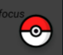
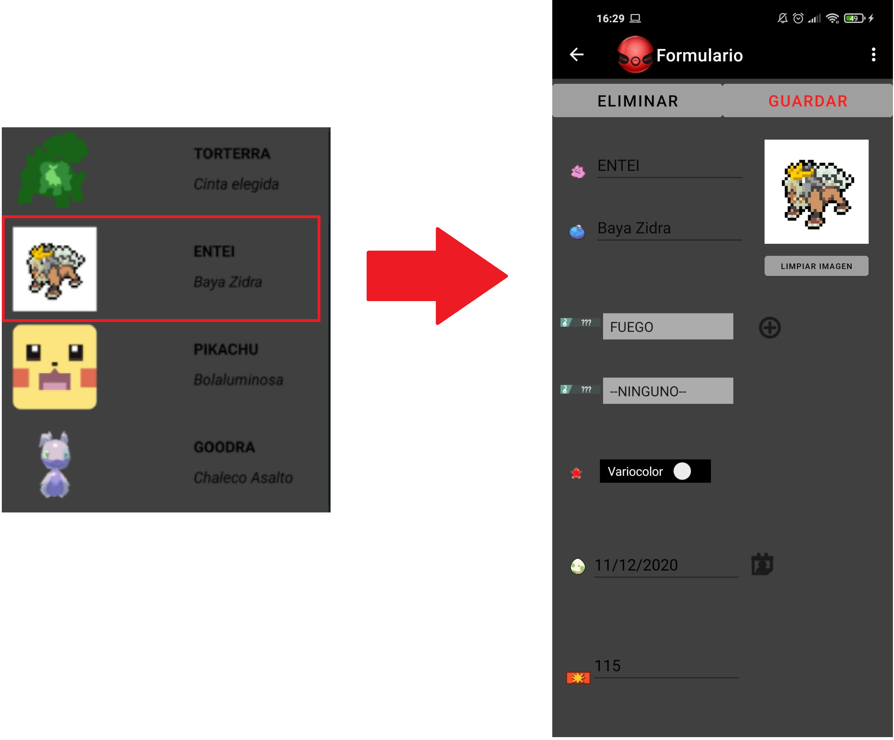

En el listado se encuentran todas los pokémon guardados en este dispositivo, con su nombre, objeto, sus tipos, si es variocolor, su fecha de creación, su ataque y su vida.
En la parte de arriba nos indica la cantidad de pokémon guardados. Abajo a la derecha tenemos un botón para añadir un nuevo pokémon. 
Si clicamos en alguno de ellos, nos llevará a la pestaña de formulario con los datos del pokémon que hemos seleccionado. 